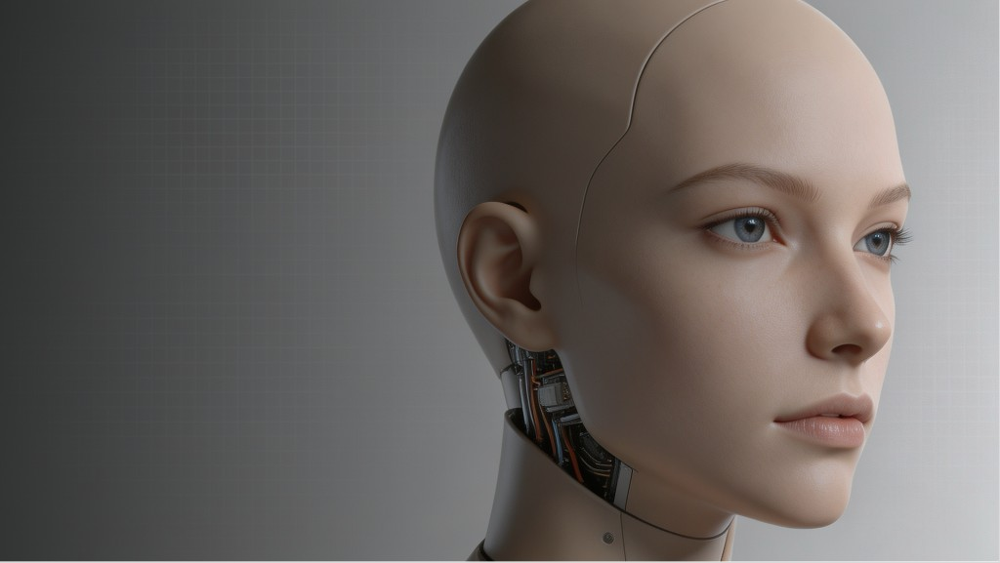

HCI Critique of AheadForm
This essay reflects on my video paper idea, where I critiqued AheadForm's AI-powered bionic robot head through the framework: the good, the bad, and the dehumanizing.

Essay
This essay talks about the ideas in my video paper The Good, the Bad, the Dehumanizing: HCI Critique of AheadForm's AI-Powered Bionic Robot Head. I will explain why I chose this product, what inspired me, how I built my ideas, how I linked them to HCI knowledge, how I made the video, and how my opinions changed after taking this HCI course.
I chose to analyze AheadForm's robot head because emotional AI robots have become more and more popular, and many people feel lonely after the pandemic. These robots look very human-like and are designed to talk and show feelings with people. When I first saw AheadForm's products online, I was shocked by how realistic they were, but I also felt a strange discomfort. This contradiction inspired me to dig deeper. Before this course, I only thought such robots were cool because of their high-end technology. But after learning HCI theories, I started to see them differently. I used the three dimensions (user desirability, technical feasibility, and business viability) to judge this product based on the HCI requirement, and settled on the theme The Good, the Bad, the Dehumanizing to show my full critique.
Before I took this course, I only cared about how advanced a technology was. I thought the more human-like a robot looked, the better it must be. I never thought about whether people would feel comfortable using it, whether their privacy was safe, or if normal people could even afford it. I believed technology should be the leading factor, and people just needed to get used to it.
This class completely changed my way of thinking. I finally understood that HCI is not about making technology as cool as possible, but about making technology fit people's real needs. I linked every point in my video to what I learned in class: I used Nielsen's heuristics, the uncanny valley theory, privacy-by-design rules, and equity principles to support my arguments. With this new idea, I built my three-part critique for the video.
In "The Good" part, I pointed out the product's real strengths. It focuses on users' need for emotional company, makes people feel closer to machines, and follows simple, clean design rules. Technically, its flexible movements and AI systems make interactions smooth. It can also be used in elderly care, education, and mental health support, which solves real social problems.
In "The Bad" part, I used what I learned in HCI class to find real flaws. Its super-realistic look causes the "uncanny valley" effect. Many users feel uncomfortable when facing near-human-like robot heads. It also records people's faces and behaviors all the time without telling them how the data is used, which is an invasion of users' privacy. What's more, its high price makes it impossible for most people to buy, creating a gap between rich and poor users.
The most important part of my video is "The Dehumanizing". This idea came directly from the HCI course. I realized that although the robot can copy empathy, it cannot truly feel emotions. If elderly people or children use it for a long time, they may depend too much on it and lose real human company. Over time, people's social skills may become weaker. Sadly, the company does not mention these problems in their promotions at all.
Making the video was a practical process for me. I made PPT slides with materials from the official website, added texts and pictures to illustrate each of my points, and recorded the whole video with Zoom. I kept it under 3 minutes, added English subtitles, and credited all materials and AI tools I used to meet the assignment rules.
In the end, this course turned me from someone who only loved cutting-edge technology into a person who thinks critically about technology from a human perspective. I now judge AI products by whether they respect people, protect privacy, and support real human relationships, not just by how advanced their technology is. Good HCI design should help people, not replace them. This is the most important lesson I learned from this class.